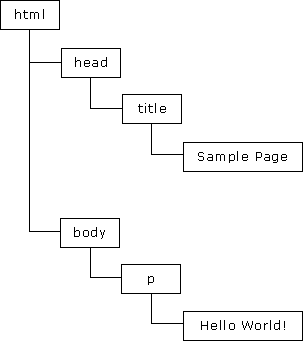

JavaScript是一种属于网络的脚本语言,已经被广泛用于Web应用开发,常用来为网页添加各式各样的动态功能,为用户提供更流畅美观的浏览效果。通常JavaScript脚本是通过嵌入在HTML中来实现自身的功能的。
JavaScript的三大组成部分是：
1、ECMAScript：JavaScript的核心，描述了语言的基本语法(var、for、if、array等)和数据类型(数字、字符串、布尔、函数、对象(obj、[]、{}、null)、未定义)，ECMAScript是一套标准，定义了一种语言（比如JS）是什么样子。
2、文档对象模型（DOM）：DOM（文档对象模型）是 HTML 和 XML 的应用程序接口（API）。DOM 将把整个页面规划成由节点层级构成的文档。HTML 或 XML 页面的每个部分都是一个节点的衍生物。请考虑下面的 HTML 页面：
<html>
<head>
<title>Sample Page</title>
</head>
<body>
<p>hello world!</p>
</body>
</html>
这段代码可以赢DOM绘制一个节点层次图

DOM 通过创建树来表示文档，从而使开发者对文档的内容和结构具有空前的控制力。用 DOM API 可以轻松地删除、添加和替换节点（getElementById、childNodes、appendChild、 innerHTML）。
3、浏览器对象模型（BOM）对浏览器窗口进行访问和操作。例如弹出新的浏览器窗口，移动、改变和关闭浏览器窗口，提供详细的网络浏览器信息（navigator object），详细的页面信息（location object），详细的用户屏幕分辨率的信息（screen object），对cookies的支持等等。BOM作为JavaScript的一部分并没有相关标准的支持，每一个浏览器都有自己的实现，虽然有一些非事实的标准，但还是给开发者带来一定的麻烦